Tolerate it?
Metaphorically connecting the increasing tolerance for both life's hardships and caffeine
Tolerate it? is an interactive installation that metaphorically connects the increasing tolerance for both life's hardships and caffeine. By utilizing Arduino for real-time ECG readings and Processing for visualization, the installation intuitively reflects the performer's stress levels. Through this work, I aim to convey that enduring suffering doesn't guarantee success or happiness but instead fosters tolerance, potentially leading to an unhealthy state.
1. Research - Growing Caffeine Dependence
After beginning work, coffee has played an increasingly vital role in my life. Initially, it was simply a straightforward tool for me to stay alert, but now, having coffee has become a natural habit in my life, as ordinary as breathing. It has subtly integrated into my daily routine, becoming a part of my existence.
# I Become a Coffee Enthusiast
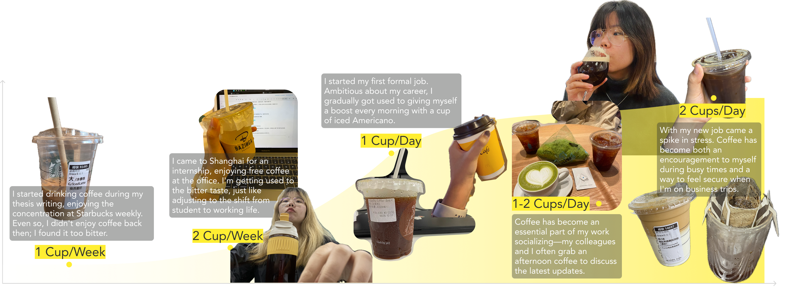
# Am I an Exception?
■ Methodology: Desk Research; Questionnaire (N=117)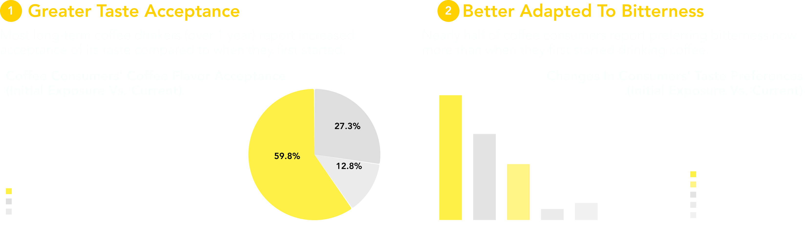
2. Research - The Correlation Between Hardship and Coffee
Suffering is merely suffering; it is we humans who have always endowed it with other meanings. Enduring pain does not necessarily lead to success, but it will certainly increase our tolerance, allowing us to bear more and more pain. However, such a process is both meaningless and lamentable.
# The Mechanism of Caffeine
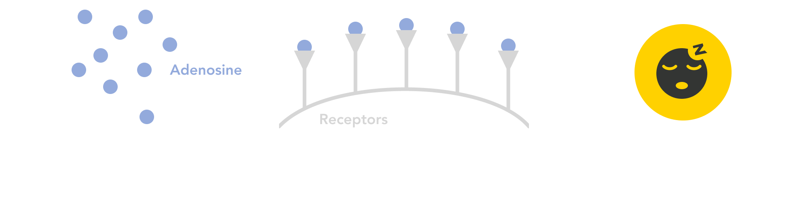
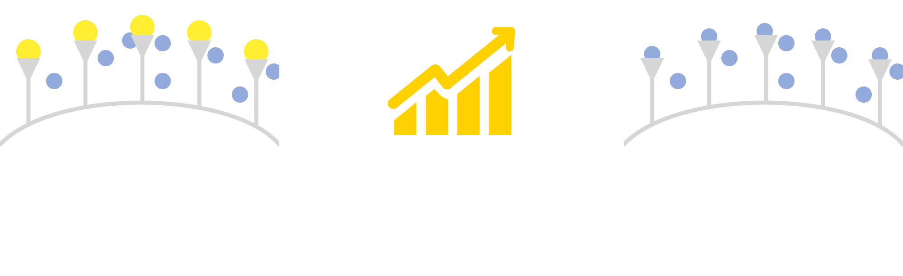
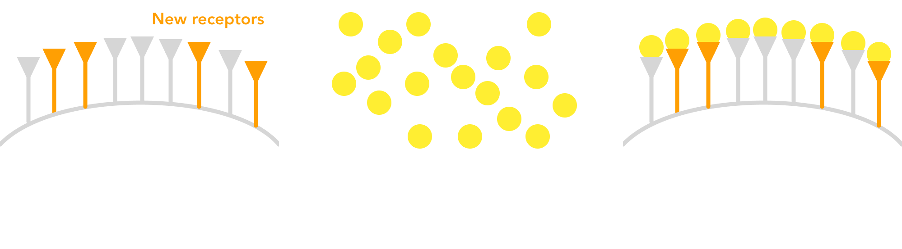
# Self-Motivation Analysis
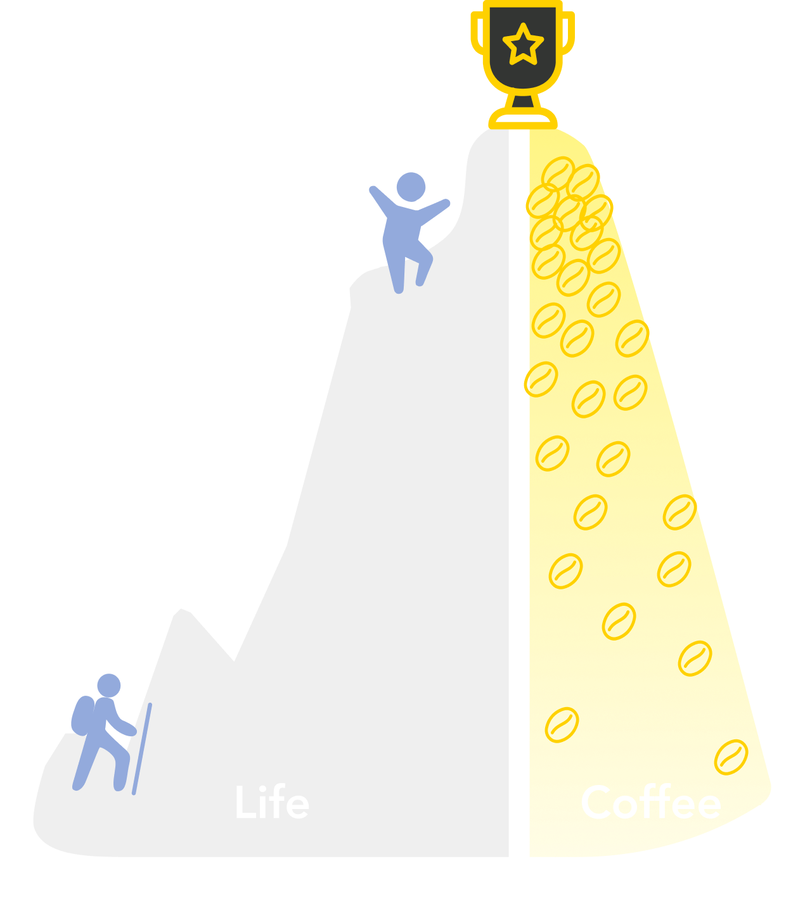
Initially, I couldn't stand the bitterness of coffee. But as I faced academic and work challenges, I often imagined that I could overcome the difficulties just as I had learned to tolerate the taste of coffee. Gradually, I came to see the bitterness of coffee as an inevitable part of the journey towards success and happiness.
# What Happens When One's Tolerance for Suffering Increases?
That is called LEARNED HELPLESSNESS - a maladaptive adaptation to the tolerance of suffering. Persistent uncontrollable negative events lead to a sense of powerlessness and resignation, creating a negative psychological loop, potentially harming health.
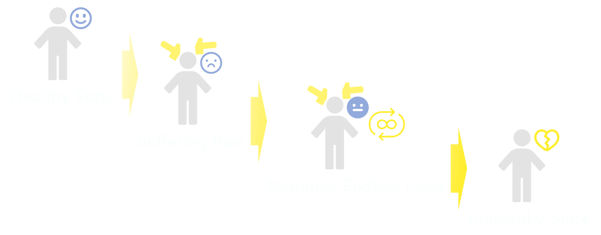
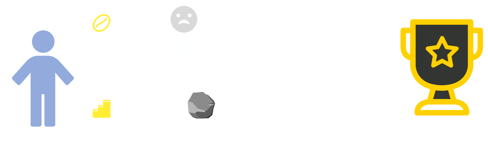
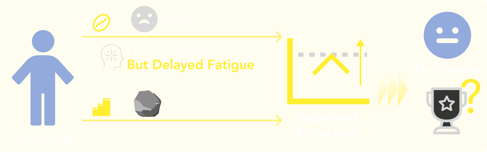
3. Design
# Installation Concept
The performer controls the infusion of coffee liquid into silicone tubes covering the body at three different flow rates, symbolizing the gradual development of caffeine tolerance. During each infusion, the performer passively endures the disruptive blare of alarms, while their ECG fluctuates from intense spikes to eventual stability—representing the increasing resilience to life's hardships.
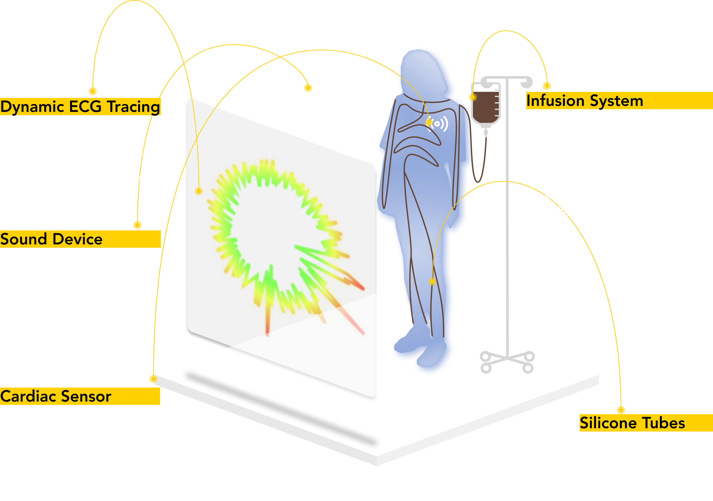
# Hardware Setting
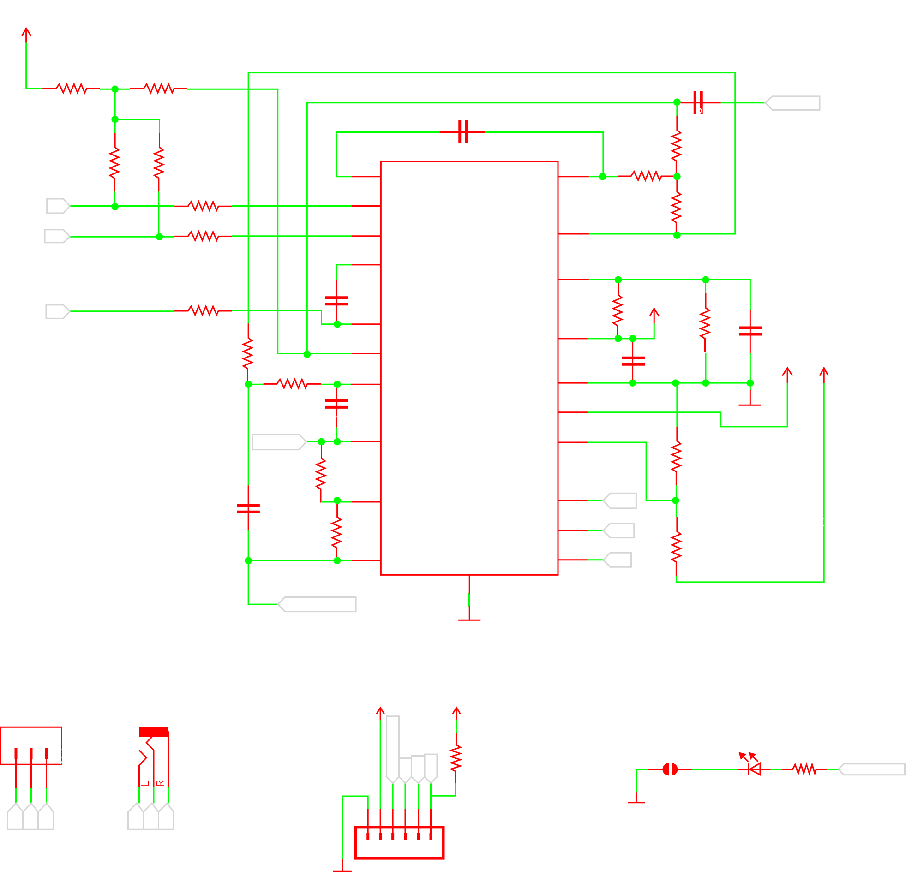
# Software Setting
See my detailed code here:
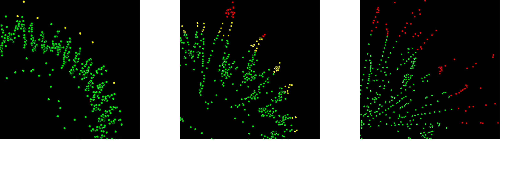
# Physical Experiments

4. Final Effect
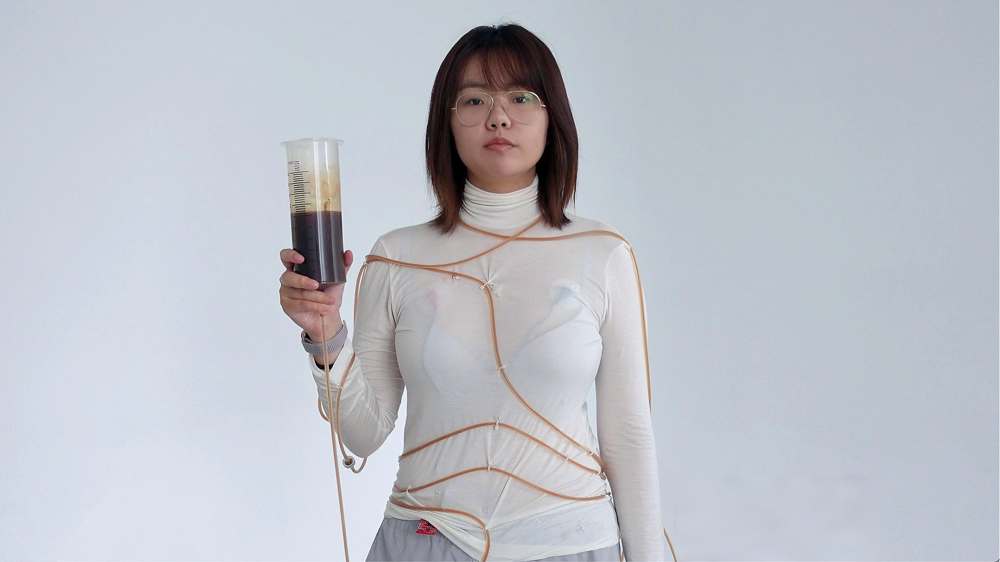
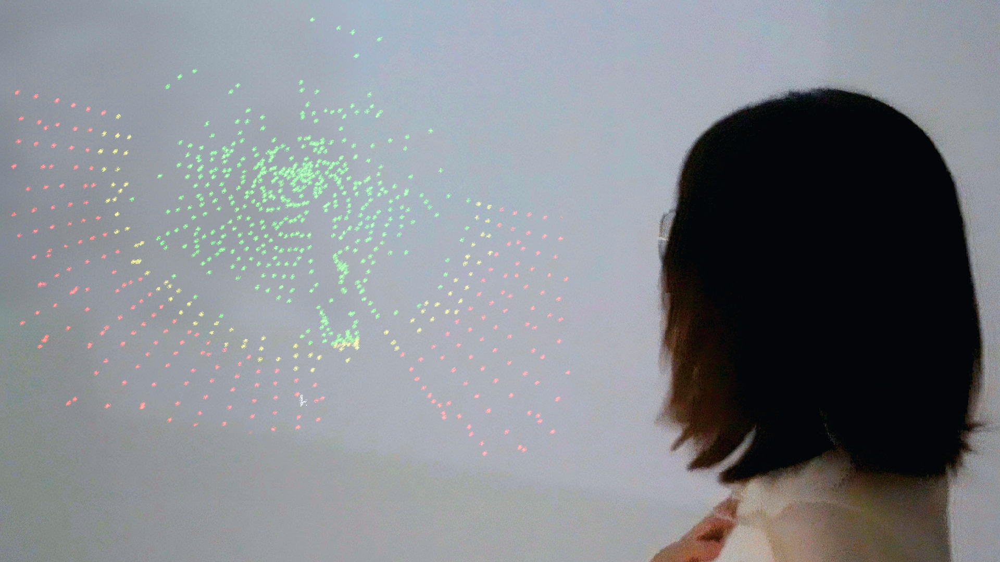
Initially, the performer activates the pump, symbolizing caffeine intake as coffee flows through the tubing. An alarm sounds, which represents the hardships encountered in life, and the performer's heart rate spikes with discomfort. In subsequent interactions, rising coffee concentration indicates growing caffeine tolerance. Despite a more urgent alarm, the performer's expression and heart rate stabilize, showing adaptation to life's hardships.

See the full video here: